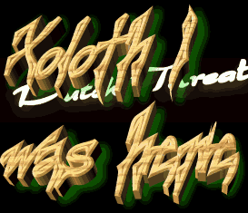
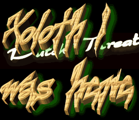

Meestervervalser & Xoloth1 present:
150
During our daily meeting Meestervervalser and i did a little
count-up of all domain we both did the
last half year..
..We concluded that we did a total of 150 domains..
Time for a celibration!
But the task remaining was finding a good location
for the party.
Almost immediatly we came up with the same idea:
What makes the internet?
TCP/IP
Our target will be 'www.tcp-ip.com' & some more, we quickly decided
just to prove what's wrong with security nowadays..
With the party hats on,
Meestervervalser & Xoloth1
Greets:
the Dutch Threat peeps
Devil-c
Ne0h
Mozy and all others involved with OSE.. you guys rule
StongeBas & Aad (you guys are the best)
Stonehenge
CUM
McNeally
Attrition
some @ #hit2000
Ante
The Canadian people
The Korean people
And all others that supported us during or quest.
"When the spirit is so digital, the body acts this way"-MM
 (c)
(c)
All pages backed up as *.bak
Click here for the original site